Validation
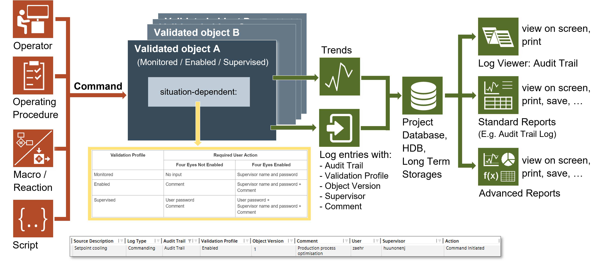
The Validation feature is designed for projects in critical environments and helps protect against inadvertent changes that might damage system functions. For procedures or workflows, see the step-by-step section.
When you change or command a validated object in the management station, the Validation Required dialog box might display, depending on several factors such as the configured validation profile, the configuration of Four Eyes, and the requirement of a comment. See the following table for more detail.
Validation Profile | Required User Action | Audit Trail Activity | |
Four Eyes Not Enabled | Four Eyes Enabled | ||
Disabled | No input | No input | None * |
Monitored | No input | Supervisor name and password | System logs action |
Enabled | Comment | Supervisor name and password + | System logs action |
Supervised | User password | User password + | System logs action |
* None = Logging of the activity but not designated as “Audit Trail”.
Additional Information for Four Eyes Authentication
- Approval must occur on the same client machine on which the change or command was initiated.
- Supervisors are limited to those designated as a supervisor by an administrator in the user or user group configuration.
- Supervisor approval can be initiated by any designated approver as long as the approver also has access to command that object.
- Supervisor must be a different user.
Log Viewer
Once you accept the entries to the Validation Required dialog box, the system records the changes, which you can review in the Log Viewer. The log serves as an audit trail record to achieve regulatory compliance for validation.
Object Version
The object version number will increment (increase) if a validated object is modified or commanded, depending on the scenario. Modifications or commanding of configuration attributes or properties will increment the object version. Modifications or commanding of status attributes or properties will not increment the object version.
Examples
The object version will change when modifying or commanding a configuration property like the High Alarm Limit or Discipline.
The object version will not change when commanding the Present Value property.
Validation Indicator
When you select a validated object in the system, a visual indicator displays next to the object name in the Operation and Extended Operation tabs.
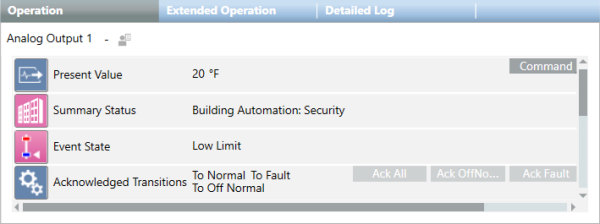
Four Eyes Not Enabled – Examples of Validation Required Dialog Boxes
This section and the next section show two dialog boxes for each validation profile. The first dialog box requires a user-entered comment. The second dialog box requires a selection from a predefined list of comments. The actual dialog box that displays when you change or command a validated object depends on whether predefined comments have been configured for the object. If predefined comments were not configured, you will see the first dialog box. If predefined comments were configured, you will see something similar to the second dialog box.
Enabled Validation Profile
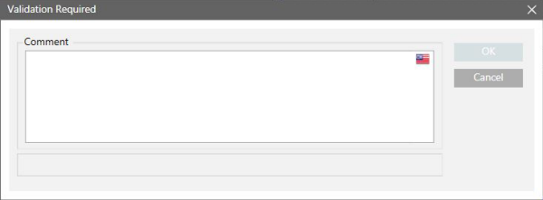
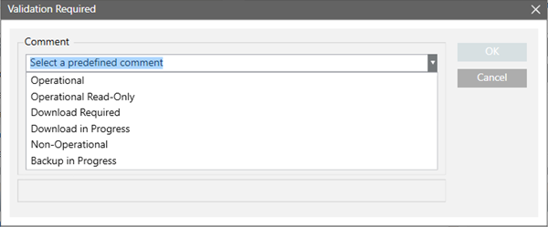
Supervised Validation Profile
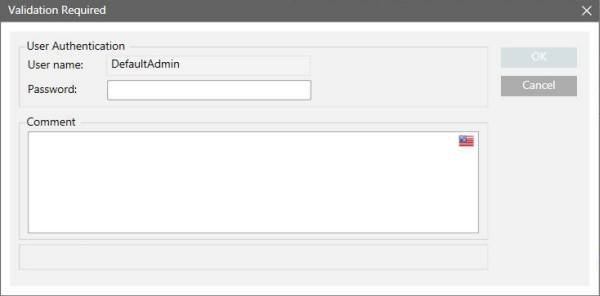
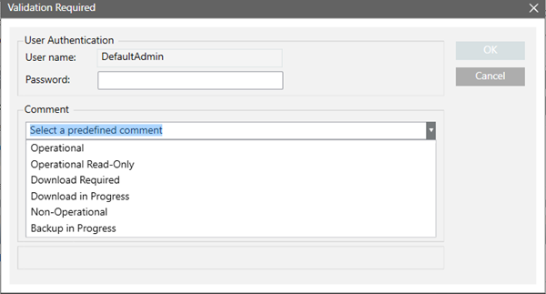
Four Eyes Enabled – Examples of Validation Required Dialog Boxes
Monitored Validation Profile
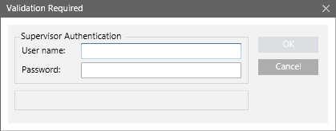
Enabled Validation Profile
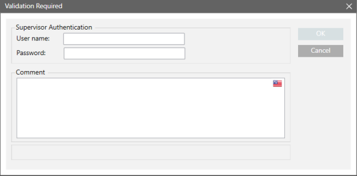
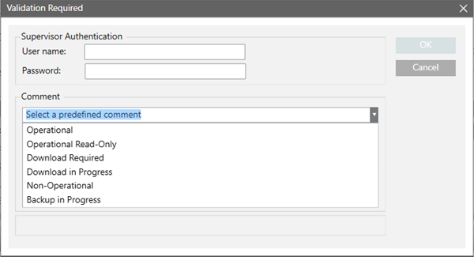
Supervised Validation Profile
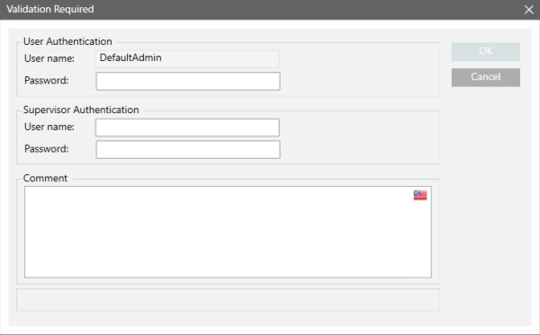
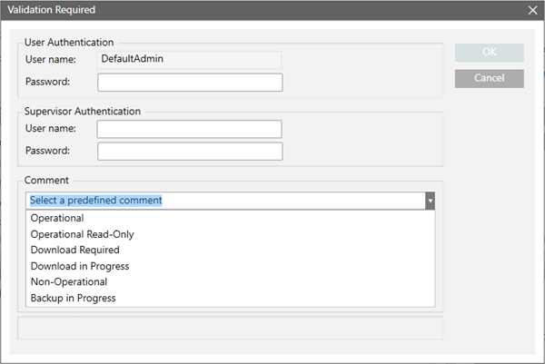

Validation Logs for Changes to Valid Field in Object Configurator
In the Object Configurator, various expanders contain the Valid check box, which enables the individual configuration of data points and properties.
This allows you to set specific behaviors different from what the associated Function and Object Model set as default (for more information, see Object Configurator).
When you select the Valid check box and perform a specific configuration, the Validation logs provide information about the Valid option change and the subsequent configuration actions.
However, when you deselect Valid to return to the default condition, the Validation logs only contain the change to the Valid option (Valid value ... changed by user from Valid to Invalid).
In analyzing the log, you should therefore interpret this action as a reset-to-default for the entire set of involved configuration items.